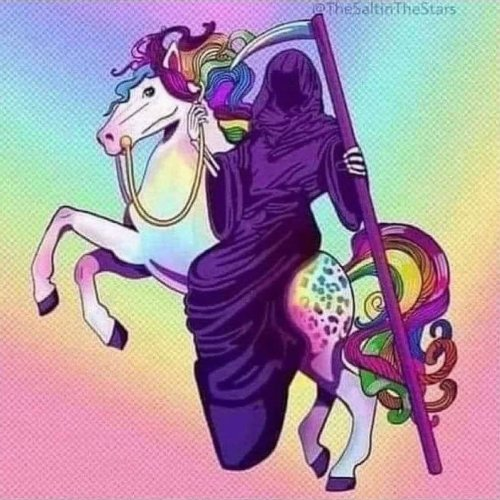

--John Troy
“There is no such thing as death at all. What do you think will die? What?“
--UG Krishnamurti
The young boy wants to talk about death. Specifically what happens after we die.
Of course, typically young folks are not yet concerned with this subject. But it turns out this boy’s grandfather was admitted to the hospital over the weekend, and he’s scared and trying to process and figure things out.
Just like every other person who's ever been born.
Humans have been concerned with what happens after death from time immemorial.
We have questions.
Do we go somewhere? Do we linger in some in-between place for a while, or maybe forever? Can we communicate? Do we come back? If so, will we remember the Me as we currently know it? What happens to our own timeline, our pets, our life, our story? Is death the end of me?
It does seem pretty clear, at least, that the body dies, taking the story of me with it.
We are dismayed. We want reassurance.
So we ask around.
The problem is, the only people that can be asked are not dead. Their answers cannot come from experience.
Which means they are guessing.
No matter how absolutely certain thinkers and philosophers may sound as they discuss heaven, hell, nothingness, or dust- still, they can only imagine. They can only theorize.
Which are words synonymous with, “making stuff up.”
Religious and spiritual leaders, ghost-hunters, séance-holders, pragmatists who say nothing comes afterwards but worms – none of them have been there.
Even for people with near-death experiences- the key word is “near.” If they are here to answer questions and write books, they are not dead.
None of them knows anymore than we do.
Regardless of how eagerly and hopefully we may cling to their answers.
Which is why, if we’re curious about death (and let’s face it, who isn’t), there’s no harm in trying to ask our questions of a different source, a source possibly closer to home.
We can try closing our eyes, beginning to notice that the body is carrying on its business of life, without us. Breath is taken care of, hearing and heartbeat and blood coursing- all of that is happening without our involvement or direction.
We can leave it to the body to carry on as it will.
And then, simply because why not, we can come right out and ask our deceased family member, our passed-away loved one, our no-longer-here pet- if they’re dead.
"Grandma, Fluffy, partner, friend- are you there? Are you dead? Does ANYONE die? Does this body die? Is it what I am? Do I die with it? Will I join you?"
Now your friendly Mind-Tickler understands that this may sound ridiculous. Which is wonderful, isn’t it? Ridiculous means there’s nothing to lose and quite possibly a good laugh to be gained.
And who couldn’t use a good laugh when thinking about the uncertain and often scary subject of death?
So no harm in listening carefully, with stillness, for an answer to each of these silly questions, asked one at a time.
A faint, barely perceptible answer. Maybe even just a sense rather than audible words.
Just for curiosity.
Astonishingly, answers might show up. Answers which are perhaps very different from our usual.
What the hell.
I mean, these folks are dead. Often they’ve been gone for years.
And yet, somehow… a reply is received.
What’s that about? Is it really the loved one answering? How is that possible?
Or is it our own wishful thinking, our own mind just making stuff up?
Or maybe it’s be God, or consciousness, or awareness, source, Oneness?
What is it that’s answering?
Of course no one knows. There is no way to know.
Any theory is just more imagining, more story-telling, more mind looking for explanations to comfort itself.
All we can can know is that very often, the replies that come are not what we would usually answer.
The same way breath and heartbeat do their own thing, happening without us.
And again, we don't have to take any responses we might hear to, “Are you dead?” the least bit seriously.
We can laugh at our foolishness freely.
Just like it’s not necessary to explain or put trust in any replies that might be heard, either.
After all, it’s not as if we can put trust in whatever explanations the mind drums up anyway.
It’s just that the feeling that often comes from asking those foolish questions and hearing those surprising answers, may also be unexpected.
Because wouldn’t it be something if the familiar fear around death dissolved
into an unfamiliar and equally unexpected
peace.
Taking the usually strong sense of self,
and its long-held stories of what we all are,
right along with it.
This might be a different kind of death than we're used to.
Yet still possibly, similarly,
transformative.
“Death is the end of
The illusion that one is mortal because
Death reveals what cannot die.”
--wu'hsin
“Death has nothing to do with going away.
The sun sets
The moon sets
But they are not gone."
--Rumi
